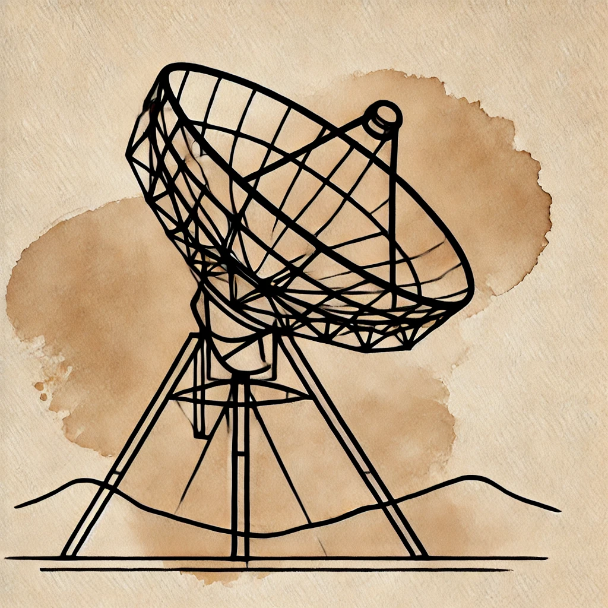
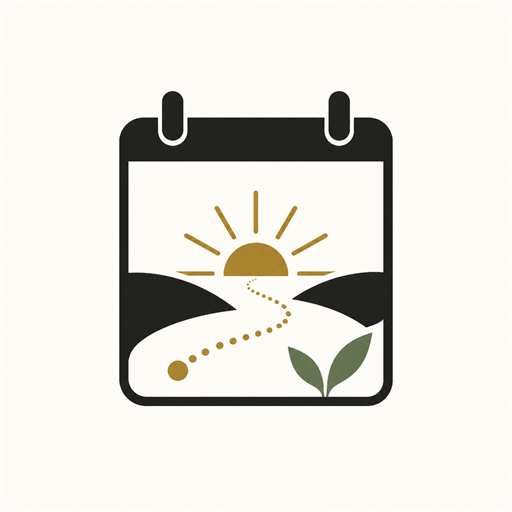
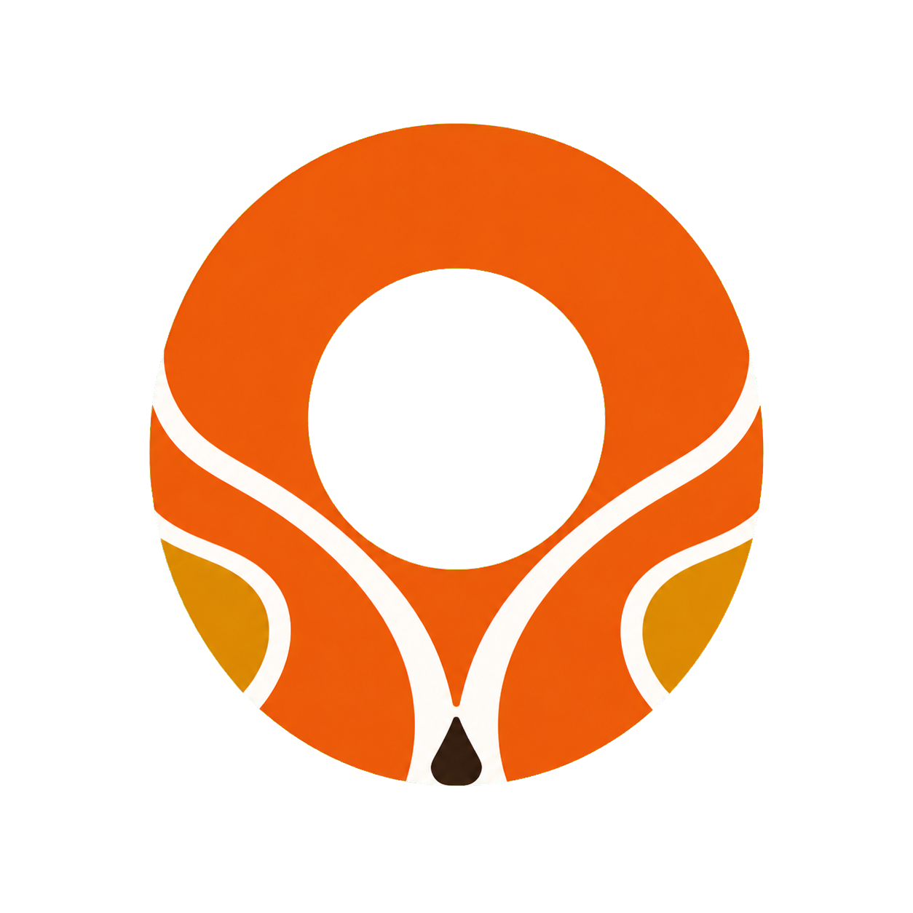
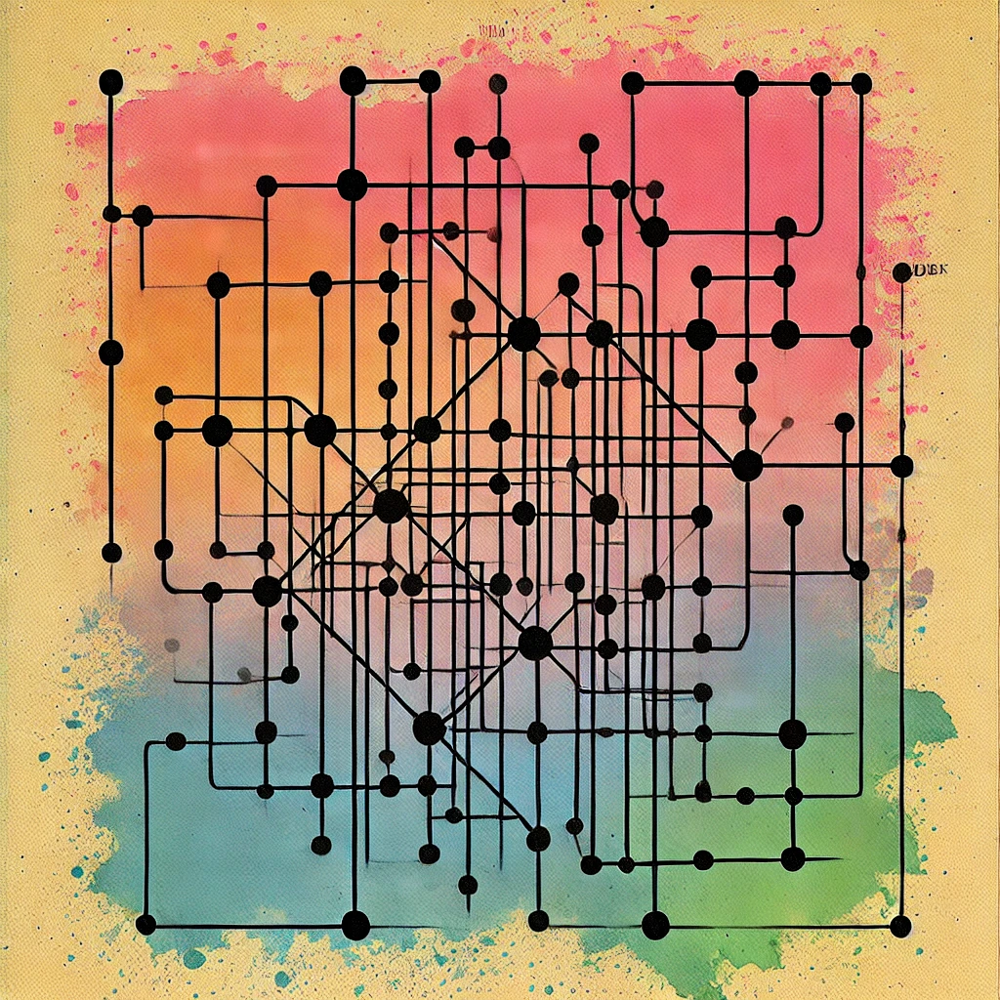
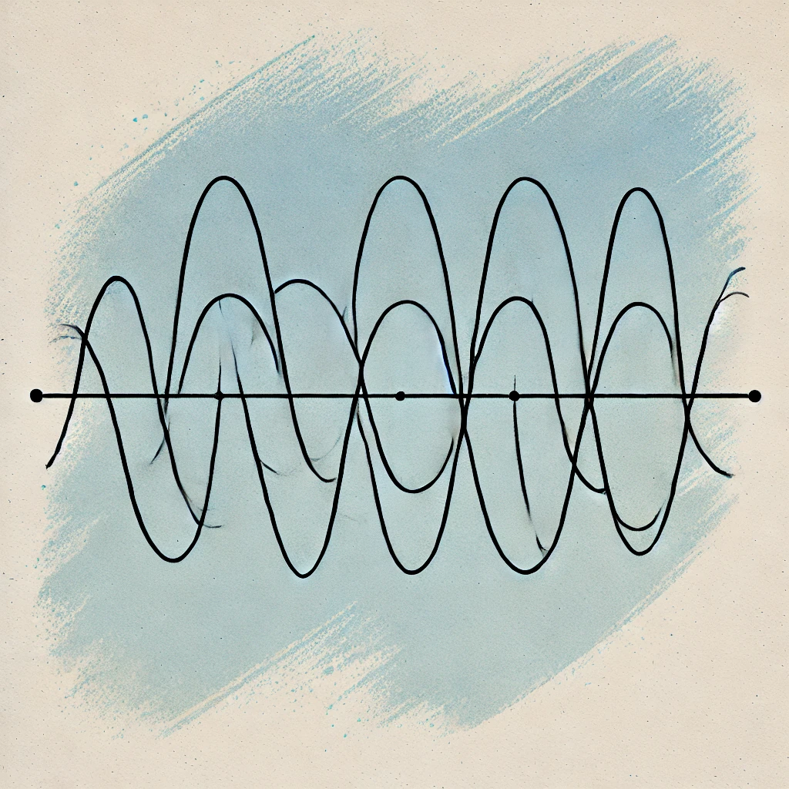
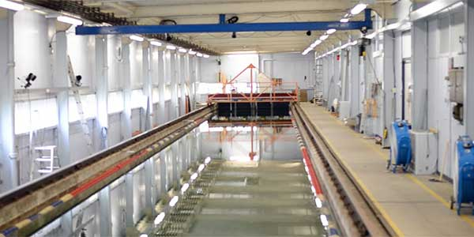
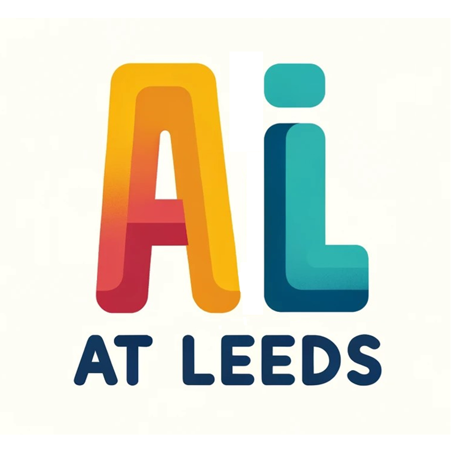
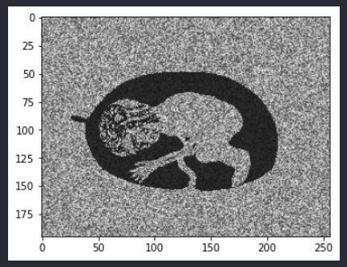
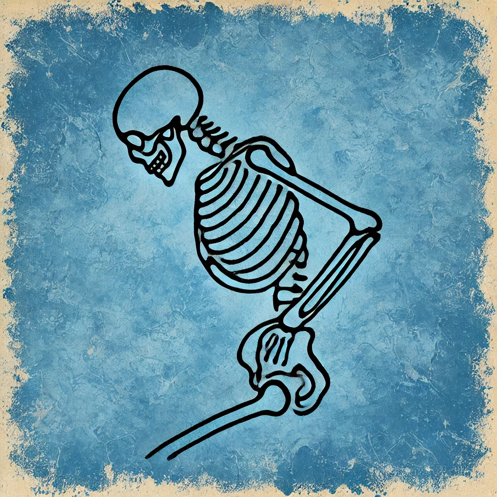

Selected work by Samuel Llanwarne
Making medical images useful
Deep learning for large medical images.
Finding and counting bacteria
Computer vision for tuberculosis microscopy.

Listening to the Milky Way
Studying the Milky Way with a student-built radio telescope.

Morrow Plan
Record thoughts and find them again later.

Lorbefor
Find local activities and arrange to take part.

A map of words
Explore words and their related meanings.

The shape of a season
Modelling seasonal weather with Fourier curves.

Strathclyde boat challenge
Our team built the furthest-travelling boat in the challenge.

Finding the road ahead
Finding lane markings in a road image.

Building AI communities
Organising AI workshops, discussions and events.
Music Note Rain
Falling piano notes with synchronised playback.

From echoes to shapes
Reconstructing simulated shapes from ultrasound signals.

Incidental AI
A hackathon prototype for practising clinical reasoning.
Follow the curiosity.
Make something useful.
My background spans physics and astronomy at Durham, computer science at St Andrews, and doctoral research in medical image analysis at Leeds.
I enjoy working on practical problems, particularly in imaging, data analysis and software. The projects here include research, things I’ve built for myself, and work with other people.
My recent products combine my own concepts and design direction with AI-assisted development. Collaborative and research projects identify their context and contribution on their individual pages.